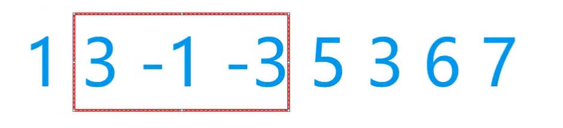
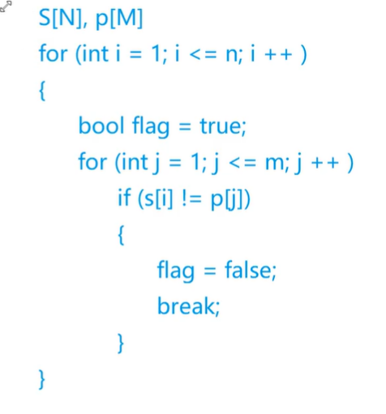
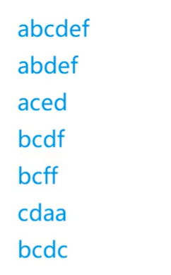
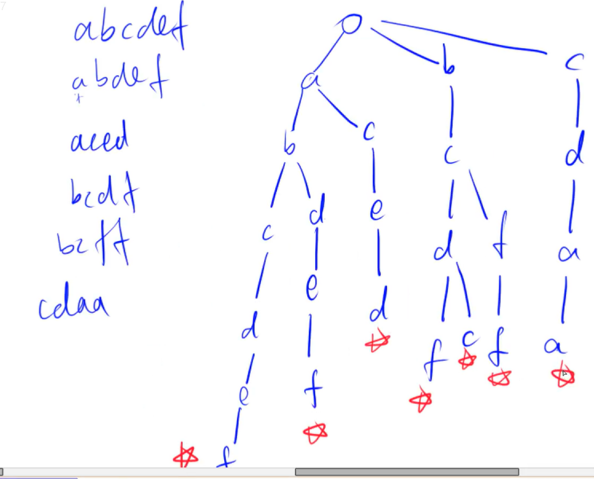
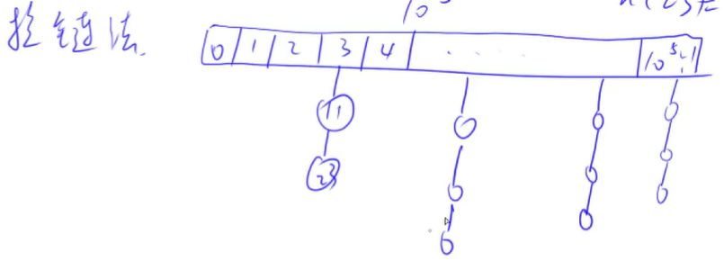
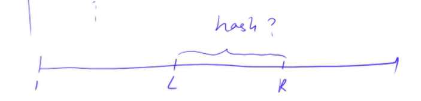

数据结构 链表与领接表
这里主要是是用数组来模拟前两个数据结构，原因是效率会更高一点
注意：
*struct Node{int val;Node next;};//不讲！
主要原因是new一个节点会花非常多的时间，数组模拟链表的特点就是 快！
单链表 需要两个数组，一个存值，一个是存next指针
习惯用e[N]和ne[N]来存储
这里注意一点，空节点的下标用-1来表示
单链表的一个性质，可以在O(1)的时间里找到某一个结点的下一个结点，但是上一个结点是找不到的，单链表是只往后看的
代码模板 1 2 3 4 5 6 7 8 9 10 11 12 13 14 15 16 17 18 19 20 21 int head, e[N], ne[N], idx;void init () head = -1 ; idx = 0 ; } void insert (int a) e[idx] = a, ne[idx] = head, head = idx ++ ; } void remove () head = ne[head]; }
领接表 双链表 两个指针，一个指向前，一个指向后
int l[N],r[N]，偷个懒，让0号点为head，下标为1的点为最右边的点
右添加操作：
在某个点右边添加一个点，先设置值，再设置其的左右指针，然后再改r[k]，和l[r[k]]
左添加操作：
一方面可以重写，另一方面对上面的函数串传参l[k]即可
删除操作：
右边的左边等于左边
左边的右边等于右边
代码模板 1 2 3 4 5 6 7 8 9 10 11 12 13 14 15 16 17 18 19 20 21 22 23 24 25 26 int e[N], l[N], r[N], idx;void init () r[0 ] = 1 , l[1 ] = 0 ; idx = 2 ; } void insert (int a, int x) e[idx] = x; l[idx] = a, r[idx] = r[a]; l[r[a]] = idx, r[a] = idx ++ ; } void remove (int a) l[r[a]] = l[a]; r[l[a]] = r[a]; }
领接表 其实就是单链表，所有操作都差不多
栈与队列 栈 先进后出，先插入的元素后弹出来
模拟很简单，我们只需要关注栈顶tt即可
tt代表栈顶，tt为0的时候说明是空的，每次入栈只需要令tt+1再插入，这时候值存入到了栈中同时栈顶也变成了tt+1
代码模板 1 2 3 4 5 6 7 8 9 10 11 12 13 14 15 16 17 int stk[N], tt = 0 ;stk[ ++ tt] = x; tt -- ; stk[tt]; if (tt > 0 ){ }
队列 先进先出，先插入的元素先弹出来
这里要定义头和尾，这里我们令tt为-1（看个人习惯）
这里还是很简单的，判空只需要看hh<=tt即可
代码模板
普通队列
1 2 3 4 5 6 7 8 9 10 11 12 13 14 15 16 17 int q[N], hh = 0 , tt = -1 ;q[ ++ tt] = x; hh ++ ; q[hh]; if (hh <= tt){ }
双端队列
1 2 3 4 5 6 7 8 9 10 11 12 13 14 15 16 17 18 19 int q[N], hh = 0 , tt = 0 ;q[tt ++ ] = x; if (tt == N) tt = 0 ;hh ++ ; if (hh == N) hh = 0 ;q[hh]; if (hh != tt){ }
单调栈 对于队列3 4 2 7 5，找出左边第一个比其小的数，我们能得到-1 3 -1 2 2，其应用不是很广
从这里课程中的例子中，我们知道，相比cin和cout，scanf和printf要快得多，强烈推荐
代码模板 1 2 3 4 5 6 7 常见模型：找出每个数左边离它最近的比它大/小的数 int tt = 0 ;for (int i = 1 ; i <= n; i ++ ){ while (tt && check (stk[tt], i)) tt -- ; stk[ ++ tt] = i; }
单调队列 常见的题型就那么几道，最经典的是求滑动窗口里的最大值和最小值
思路：和单调栈一样，先朴素算法来找，然后把没有用的元素删掉，看一看有没有单调性，有的话应该怎么去用
此外，在不开O2和O3优化的时候，数组模拟的速度比STL的快很多
例子：

这个窗口可以用队列来维护，如果一个窗口里面用 暴力做法，那么最后的时间复杂度就要超标了
这个例子中，队列里存的内容是下标，怎么判断什么时候出队呢，只需要判断其是否已经比i-k+1小了，即不在这个范围里了
然后，我们要考虑队列尾元素是否比接下来要插入的数大/小（check）如果是的话则队列尾元素出队列换成新的队尾即可，因为新插入的元素如果小的话，它的生命周期又长，那么无疑要挤占所有不行的数的生存空间，直到(a[q[tt]==a[i]）即队首就是它
代码模板 1 2 3 4 5 6 7 8 常见模型：找出滑动窗口中的最大值/最小值 int hh = 0 , tt = -1 ;for (int i = 0 ; i < n; i ++ ){ while (hh <= tt && check_out (q[hh])) hh ++ ; while (hh <= tt && check (q[tt], i)) tt -- ; q[ ++ tt] = i; }
KMP
一般我们都要想一下暴力枚举是怎么做的，然后再去思考怎么去优化
朴素算法 S[N]是要匹配的串，长串，p[M]是短串，模式串

KMP方法
next[i] = j的含义是
p[1~j] = p[i-j+1,i]
这里还是比较好理解的，相当于对目前的串进行一次从开头开始和从尾部开始的一种对应关系（找对称）
这个过程是很抽象的，但是代码是比较好理解的
此外C++里next是某个库里的东西，用ne是保险的
求Next数组的过程
代码模板 1 2 3 4 5 6 7 8 9 10 11 12 13 14 15 16 17 18 19 20 求模式串的Next数组： for (int i = 2 , j = 0 ; i <= m; i ++ ){ while (j && p[i] != p[j + 1 ]) j = ne[j]; if (p[i] == p[j + 1 ]) j ++ ; ne[i] = j; } for (int i = 1 , j = 0 ; i <= n; i ++ ){ while (j && s[i] != p[j + 1 ]) j = ne[j]; if (s[i] == p[j + 1 ]) j ++ ; if (j == m) { j = ne[j]; } }
复杂度分析 注意时间复杂度为O(n)，i循环中，每次j最多加了一次，而while循环里面j=ne[j]至少减了1，所以有点摊还分析的意思，看似两重循环实际上最多也就执行了2n步
Trie
y总：Trie树是一个非常非常简单的数据结构
用来高效地存储和查找字符串集合的数据结构

说白了就是存的东西比较简单
创建一个根节点，然后把第一个单词按字母依次存入

标记：万一插入了一个abc，得在c处增加标记才能表明这是一个能被查找到的字符串
算法题中，凡是用trie树做的题目，题目一定限制了字母的种类，idx依然是当前处理的某个结点
代码模板 1 2 3 4 5 6 7 8 9 10 11 12 13 14 15 16 17 18 19 20 21 22 23 24 25 26 27 28 29 30 31 Wint son[N][26 ], cnt[N], idx; void insert (char *str) int p = 0 ; for (int i = 0 ; str[i]; i ++ ) { int u = str[i] - 'a' ; if (!son[p][u]) son[p][u] = ++ idx; p = son[p][u]; } cnt[p] ++ ; } int query (char *str) int p = 0 ; for (int i = 0 ; str[i]; i ++ ) { int u = str[i] - 'a' ; if (!son[p][u]) return 0 ; p = son[p][u]; } return cnt[p]; }
并查集（*）
面试题和代码题非常常见的一种数据结构
并且代码很短，而且非常考思维
并查集本身是用来干嘛的捏？主要是用来快速的维护一些操作：
集合合并（用暴力方法速度比较慢）
询问两个元素是否在一个集合当中
并查集可以在近乎 O(1)的时间里快速支持和维护上面的两个操作
一些血淋淋的教训：最好用字符串来读字符，不然测试用例如果整个什么空格，有你好受的
基本原理 用树的方式来维护一个集合，根节点的编号就是当前集合的编号，对每一个结点都存储其父结点，当我们想求某个点属于某个集合的时候，可以递归地寻找父结点，直到找到根节点的编号
问题1：如何判断树根 if(p[x] == x)
问题2：如何求x的集合编号 while (p[x]!=x) x =p[x] 这一步的复杂度比较高，可以有一个很牛逼的优化
问题3：集合合并：px是x的集合编号，py是y的集合编号。p[x]=y
路径压缩的优化 从一个点找到根节点之后，就会把整个路径所有点的父节点指向根节点（狠狠加速）在加完这个优化之后，就可以看成O(1)的复杂度了
按值合并的优化
y总：没啥用，感兴趣自己去看看吧
代码模板 1 2 3 4 5 6 7 8 9 10 11 12 13 14 15 16 17 18 19 20 21 22 23 24 25 26 27 28 29 30 31 32 33 34 35 36 37 38 39 40 41 42 43 44 45 46 47 48 49 50 51 52 53 54 55 56 57 58 59 60 61 62 63 64 65 66 67 68 69 70 (1 )朴素并查集： int p[N]; int find (int x) { if (p[x] != x) p[x] = find (p[x]); return p[x]; } for (int i = 1 ; i <= n; i ++ ) p[i] = i; p[find (a)] = find (b); (2 )维护size的并查集： int p[N], size[N]; int find (int x) { if (p[x] != x) p[x] = find (p[x]); return p[x]; } for (int i = 1 ; i <= n; i ++ ) { p[i] = i; size[i] = 1 ; } size[find (b)] += size[find (a)]; p[find (a)] = find (b); (3 )维护到祖宗节点距离的并查集： int p[N], d[N]; int find (int x) { if (p[x] != x) { int u = find (p[x]); d[x] += d[p[x]]; p[x] = u; } return p[x]; } for (int i = 1 ; i <= n; i ++ ) { p[i] = i; d[i] = 0 ; } p[find (a)] = find (b); d[find (a)] = distance;
堆（这里以小根堆为例） 支持操作 如何手写一个堆？
堆支持的最基础的三个操作（维护一个数据集合）
插入一个数
求这个集合当中的最小值
删除最小值
这两个STL的堆是实现不了的（或者可以间接实现）
删除任意一个元素
修改任意一个元素
堆的数据结构是一个完全二叉树
对于小根堆来说，每个点的值都小于其左右儿子的值，因此根节点的值是最小的
存储形式（下标从1开始） 注意对于结点x来说，其左儿子是2x，右儿子是2x+1，因此可以用一个一维数组来存储一个堆
支持操作 down(x)：把一个结点往下调整
up(x)：把一个结点往上调整
如果修改根节点的内容，则会尝试交换直到满足小根堆的定义，注意对小根堆来说换上来的数应该是根节点左右儿子中较小的那个
插入操作 heap[++size] = x; up(size);
求最小值 heap[1]
删除最小值操作 用最后一个元素覆盖根结点（对于一维数组来说尾结点很好删除）
heap[1] = heap[size]; size–; down(1);
先覆盖，干掉最后一个点，再维护
删除第k个点 heap[k] = heap[size]; size–; down(k); up(k);
这里选择了down和up，但实际上最多执行了一个
修改任意一个元素 heap[k]=x; down(k); up(k);
建堆细节 先直接赋值进h里，假设size是n，我们从n/2开始遍历，如果一个数是比较大的就down下去，如果是小的则up上来，对于这个例子中我们直接down就完事了
down操作细节：
令t=u
看左节点是否存在以及左节点是否更小，如果是则t换成左节点
对右结点同理
若u和t不相等，则交换一下其在堆中对应的值并使用down维护t（这是因为t和u的值交换了但是t还停留在原根节点的某个子节点上，这时候这个子节点已经被赋上了根节点的值，这个时候需要看看其与其新的左右孩子值之间的关系来维护
up操作细节：
做一个while循环，使用u/2来得到父节点，并看父节点是否更大，如果是，则作swap过程并且让u/=2，如此循环便可以上去了
代码模板 1 2 3 4 5 6 7 8 9 10 11 12 13 14 15 16 17 18 19 20 21 22 23 24 25 26 27 28 29 30 31 32 33 34 35 36 37 int h[N], ph[N], hp[N], size;void heap_swap (int a, int b) swap (ph[hp[a]],ph[hp[b]]); swap (hp[a], hp[b]); swap (h[a], h[b]); } void down (int u) int t = u; if (u * 2 <= size && h[u * 2 ] < h[t]) t = u * 2 ; if (u * 2 + 1 <= size && h[u * 2 + 1 ] < h[t]) t = u * 2 + 1 ; if (u != t) { heap_swap (u, t); down (t); } } void up (int u) while (u / 2 && h[u] < h[u / 2 ]) { heap_swap (u, u / 2 ); u >>= 1 ; } } for (int i = n / 2 ; i; i -- ) down (i);
哈希表 把一个庞大复杂的数据结构映射到从0到N的一个小区域上
常见的方法是把从0-10^9^映射到0-10^5^的范围上
做法是通过一个哈希函数
$$
一般情况直接用x mod 10^5这种方式来映射
但是这样会产生冲突，因此引申出了两种处理冲突的方式
存储结构 开放寻址法 只开了一个一维数组，但是长度在经验上要开到题目中的数的2~3倍，这时候冲突的概率比较低了
步骤：
找到位置k，如果k空，进行操作
如果k不空，下移一格，进行操作，如此反复
拉链法 比较简单 ，先开一个一维数组，下标从0到10^5^-1，每一个位置当做一个槽，用来存储当前槽上有的数，比如11映射到了3，就在3的位置下连上11，如果2也存在3的位置，则在11下再连一个2

一般情况下，我们认为哈希表链的平均长度是一个常数，因此查询的时间复杂度是O(1)
算法题里一般不会删除元素，即使真的要删，一般也只是标记删
此外，求哈希时，取模的话要取一个 ==质数 ==，这样冲突的概率是最小的
负数模N是多少呢？
这里为了防止出现负数，可以使用(x % N + N) % N
一般哈希 代码模板 1 2 3 4 5 6 7 8 9 10 11 12 13 14 15 16 17 18 19 20 21 22 23 24 25 26 27 28 29 30 31 32 33 34 35 36 37 (1 ) 拉链法 int h[N], e[N], ne[N], idx; void insert (int x) { int k = (x % N + N) % N; e[idx] = x; ne[idx] = h[k]; h[k] = idx ++ ; } bool find (int x) { int k = (x % N + N) % N; for (int i = h[k]; i != -1 ; i = ne[i]) if (e[i] == x) return true ; return false ; } (2 ) 开放寻址法 int h[N]; int find (int x) { int t = (x % N + N) % N; while (h[t] != null && h[t] != x) { t ++ ; if (t == N) t = 0 ; } return t; }
字符串哈希 这里主要指的是字符串前缀哈希法
首先计算字符串前缀的哈希
把字符串看成一个P进制数（每位数代表一个1-P-1范围的数），然后按位计算，再对Q取模，注意当P=131或13331时，Q=2^64^
这样的好处是可以利用前缀的哈希来求得任何一个子串的哈希

已知h[R]和h[L-1]，注意此时高位在前，低位在后。最右边是第0位，最左边是（长度-1）位
第一步先将h[L-1]*p^R-L+1^来使h[L-1]左移到和h[R]对齐，然后他们的位数就对齐了
第二步令h[R]-h[L-1]*p^R-L+1^
如此便能得到L-R之间的子串的哈希值了
代码模板 1 2 3 4 5 6 7 8 9 10 11 12 13 14 15 16 17 18 19 核心思想：将字符串看成P进制数，P的经验值是131 或13331 ，取这两个值的冲突概率低 小技巧：取模的数用2 ^64 ，这样直接用unsigned long long 存储，溢出的结果就是取模的结果 typedef unsigned long long ULL;ULL h[N], p[N]; p[0 ] = 1 ; for (int i = 1 ; i <= n; i ++ ){ h[i] = h[i - 1 ] * P + str[i]; p[i] = p[i - 1 ] * P; } ULL get (int l, int r) return h[r] - h[l - 1 ] * p[r - l + 1 ]; }
STL使用技巧 1 2 3 4 5 6 7 8 9 10 11 12 13 14 15 16 17 18 19 20 21 22 23 24 25 26 27 28 29 30 31 32 33 34 35 36 37 38 39 40 41 42 43 44 45 46 47 48 49 50 51 52 53 54 55 56 57 58 59 60 61 62 63 64 65 66 67 68 69 70 71 72 73 74 75 76 77 78 79 80 81 82 83 84 85 86 87 88 89 90 91 92 93 94 95 96 97 98 99 100 101 102 103 104 105 106 107 108 109 110 111 112 113 114 115 116 117 118 119 120 121 122 123 124 125 126 127 128 129 130 131 132 133 134 #include <iostream> #include <vector> #include <algorithm> #include <cstring> #include <cstudio> #include <vector> vector, 变长数组，倍增的思想 size () 返回元素个数 empty () 返回是否为空 clear () 清空 front ()/back () push_back ()/pop_back () begin ()/end () [] 支持比较运算，按字典序 pair<int , int > pair<int ,int > p; p = {1 ,1 } first, 第一个元素 second, 第二个元素 支持比较运算，以first为第一关键字，以second为第二关键字（字典序） #include <cstring> string，字符串 size ()/length () 返回字符串长度 empty () clear () substr (起始下标，(子串长度)) 返回子串 c_str () 返回字符串所在字符数组的起始地址，用法见下 printf ("%s\n" , a.c_str ()); #include <queue> queue, 队列 queue<int > q; q = queue <int >(); size () empty () push () 向队尾插入一个元素 front () 返回队头元素 back () 返回队尾元素 pop () 弹出队头元素 #include <queue> priority_queue, 优先队列，默认是大根堆 priority_queue<int > heap; size () empty () push () 插入一个元素 top () 返回堆顶元素 pop () 弹出堆顶元素 定义成小根堆的方式： priority_queue<int , vector<int >, greater<int >> q; #include <stack> ? stack, 栈 size () empty () push () 向栈顶插入一个元素 top () 返回栈顶元素 pop () 弹出栈顶元素 #include <deque> deque, 双端队列 size () empty () clear () front ()/back () push_back ()/pop_back () push_front ()/pop_front () begin ()/end () [] 一般也不怎么用，疑似是效率慢的要死 set, map, multiset, multimap, 基于平衡二叉树（红黑树），动态维护有序序列 size () empty () clear () begin ()/end () ++, -- 返回前驱和后继，时间复杂度 O (logn) #include <set> set/multiset set<int > S; multiset<int > S; insert () 插入一个数 find () 查找一个数 count () 返回某一个数的个数 erase () (1 ) 输入是一个数x，删除所有等于x的结点 O (k + logn)，k是x的个数 (2 ) 输入一个迭代器，删除这个迭代器 lower_bound ()/upper_bound () lower_bound (x) 返回大于等于x的最小的数的迭代器 upper_bound (x) 返回大于x的最小的数的迭代器 #include <map> map/multimap map<string,int > a; a['yxc' ] = 1 ; insert () 插入的数是一个pair erase () 输入的参数是pair或者迭代器 find () [] 注意multimap不支持此操作。 时间复杂度是 O (logn) lower_bound () /upper_bound () unordered_set, unordered_map, unordered_multiset, unordered_multimap, 哈希表 和上面类似，增删改查的时间复杂度是 O (1 ) 不支持 lower_bound () /upper_bound () ， 迭代器的++，-- bitset, 圧位 bitset<10000> s ; ~, &, |, ^ >>, << ==, != [] count () 返回有多少个1 any () 判断是否至少有一个1 none () 判断是否全为0 set () 把所有位置成1 set (k, v) 将第k位变成v reset () 把所有位变成0 flip () 等价于~ flip (k) 把第k位取反 作者：yxc 链接：https: 来源：AcWing 著作权归作者所有。商业转载请联系作者获得授权，非商业转载请注明出处。
1 2 3 4 vector<int > a (10 ,3 ) ; a.size (); a.empty ();